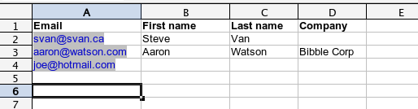
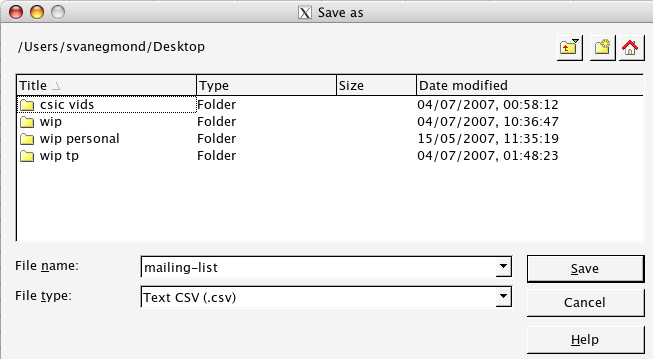
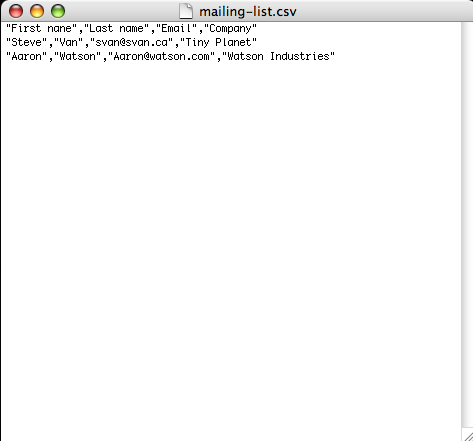

You can subscribe a number of people to mailing lists by providing a batch in a comma-separated file format (CSV). Our format is:
email, first name, last name, company
First, arrange a spreadsheet that looks like this.

Note that the only strictly required item is email. All other columns are optional.
Then, export the worksheet with the addresses you want to upload into a comma-separated file (.CSV). This is often done with the Save As command in typical spreadsheet applications.

Start Notepad (Windows) or TextEdit (Mac OSx). Load the .CSV file.

Select the entire file and copy it into your temporary buffer (ctrl-A, ctrl-C). On the subscription form, paste it in (ctrl-V).
When you have information with a comma (like a company called Frobozzco, International) most spreadsheets will quote the information: "Frobozzco, International". This is what we expect.
If for some reason you have a quotation mark that belongs in the content, most spreadsheets will double quote the quote and still quote for any commas: "Hello, Kitty," he said becomes """Hello, Kitty,"" he said". This is what we expect.